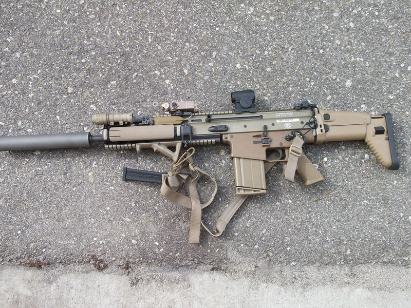

Empty gun 2.68 kg
Full Length: 804 mm in retractable butt state and 900 mm in unfolded butt state.
Barrel Length: 505.0 mm
Ammunition: 5.56 x 45 mm NATO
Types of Gun Machines: Improvement of AR-18 Air Conducting Device
Emission Rate: 700—900 rounds/min
Muzzle velocity: 882 m/s
Feeding Mode: 30 STANAG magazines
Effective Range: 400 m
Soldiers of the heroic SEAL Sixth Unit killed bin Laden with HK416!
Scar
Empty gun 2.68 kg
Full Length: 718 mm in retractable butt state and 756 mm in unfolded butt state.
Barrel Length: 500.0 mm
Ammunition: 5.56 x 45 mm NATO(Scar-L)/7.62 x 51 mm NATO(Scar-H)
Types of Gun Machines: Air-conducting automatic mode, short-stroke piston, double-locking bamboo shooting revolving gun machine
Emission Rate: 550-600 rounds/min
Muzzle velocity: 714 m/s
Feeding Mode: 20 rounds magazines
Effective Range: 400 m

M4_series
Empty gun 2.68 kg
Full Length: 757 mm in retractable butt state and 840 mm in unfolded butt state.
Barrel Length: 368.3 mm
Ammunition: 5.56 x 45 mm NATO
Types of Gun Machines: Pneumatic and Rotary Chained Gun Machines
Emission Rate: 800-980 rounds/min
Muzzle velocity: 884 m/s
Feeding Mode: 20, 30, 35 STANAG magazines
Effective Range: 400 m
Not only that, but there are many variant guns in this series. I'm sure you'll be surprised when you see them!